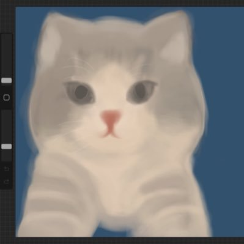

CatRoll.OHP🏳️⚧️日雌泰补
@lumigj02
@fangunmao 补药双取我😭我是一只猫卷

翻滚猫
@fangunmao
过了个520，还完了四千多的花呗还剩下一笔小钱，我终于不欠支付宝了😭感动😭
过会回家以后，我打算双取一些平时没咋见过的人，我有这个想法已经很久了，但是看到有人说双取还要说一声什么的，我感觉好麻烦，我也怕被人骂。不过我今天想了想可能他们也不会知道吧，反正平时也刷不到对方，应该是这样对吧 https://t.co/L25WHHOICS